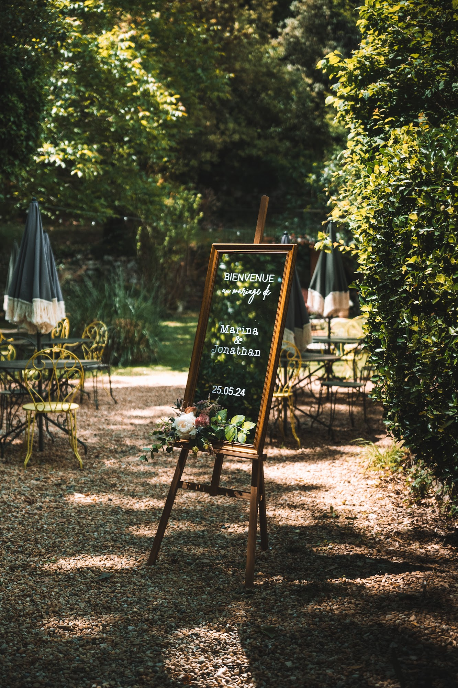
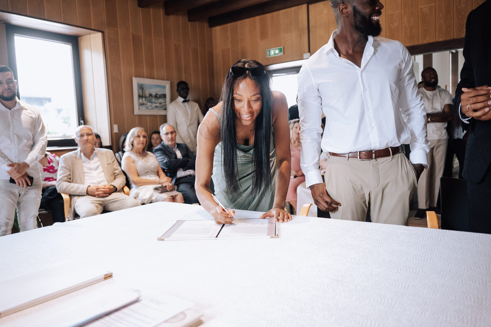
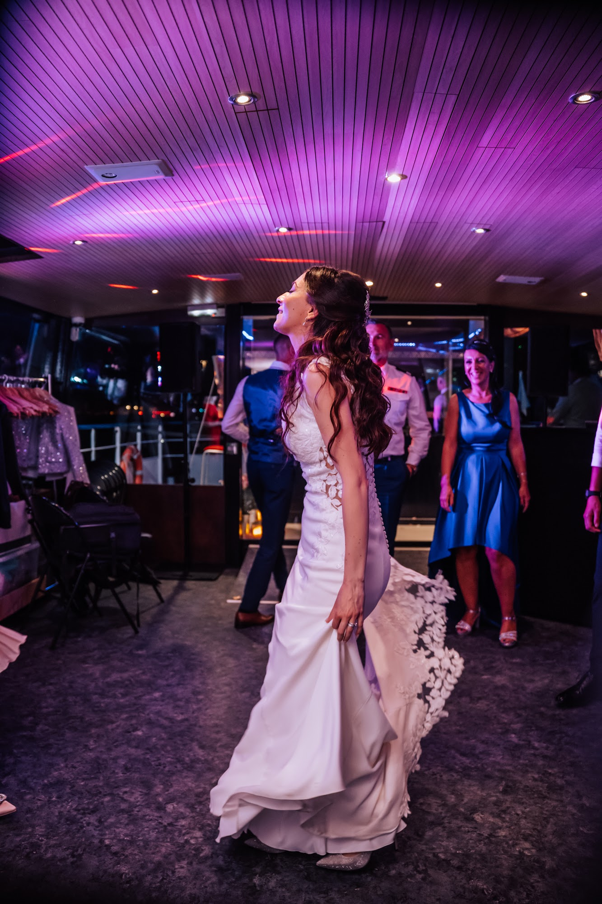

Photographe de séminaire à Lyon : la checklist de l'organisateur
La réussite d'un rassemblement professionnel repose sur de longs mois de préparation et une attention portée aux moindres détails. Engager un photographe de séminaire à Lyon est une étape décisive pour garder une trace tangible de ces efforts et de l'énergie de vos équipes. Je partage ici ma méthode de travail et les points essentiels à valider avec votre prestataire pour obtenir des images élégantes, naturelles et fidèles à votre image de marque.

Définir l'ambiance visuelle de votre reportage corporate
Chaque entreprise possède sa propre culture et une manière unique d'interagir avec ses collaborateurs. Avant de parler d'organisation pratique, je trouve fondamental de définir l'atmosphère que vous souhaitez donner à votre reportage corporate. Une jeune entreprise du numérique cherchera des images lumineuses, dynamiques et prises sur le vif lors d'ateliers collaboratifs. Un cabinet d'expertise comptable organisant une réunion de direction attendra plutôt des cadrages sobres, des contrastes profonds et une allure plus formelle.
Je prends le temps d'écouter votre vision pour ajuster mon approche esthétique. Mon approche photographique s'appuie sur la lumière naturelle pour sculpter les visages et donner du relief aux espaces de travail. Je m'attache à restituer la texture d'un beau papier sur un bureau, le reflet d'une baie vitrée sur une table de réunion ou la chaleur d'un éclairage tamisé. Comprendre l'identité de votre société m'aide à faire des choix techniques précis, pour que la série d'images finale soit le reflet exact de votre professionnalisme.

L'importance du repérage pour un photographe de séminaire à Lyon

La région lyonnaise offre une variété impressionnante de décors pour accueillir les équipes professionnelles. Organiser une plénière dans un espace industriel du quartier de la Confluence ne demande pas le même regard qu'un dîner dans un domaine du Beaujolais ou une retraite de cadres dans un château des Monts d'Or. Le rôle de celui qui tient l'appareil est de s'imprégner de l'architecture et des contraintes spatiales de ces lieux.
J'étudie systématiquement la configuration des salles de conférence et des espaces de réception extérieurs. Cette anticipation me permet de savoir exactement où me placer pour capturer l'entrée d'un intervenant sur scène sans gêner la vue du public. Les immenses verrières d'un domaine en Isère ou les épais murs en pierre dorée d'un manoir dans le Rhône dictent ma façon de régler mon exposition. Connaître son terrain d'action aide à composer avec les ombres dures du midi ou les reflets métalliques pour rendre justice au cadre que vous avez sélectionné.
Anticiper le rythme avec votre photographe de séminaire à Lyon
Le tempo d'une journée d'étude est souvent intense, réglé à la minute près. Pour qu'un photographe de séminaire à Lyon puisse documenter la totalité des temps forts, il a besoin d'une vision très claire de votre emploi du temps. Je demande à recevoir le programme détaillé plusieurs semaines avant le jour de la convention. Savoir à quelle heure précise débute le discours d'ouverture me laisse le temps de tester mes focales et de trouver un axe dégagé avant que le silence ne s'installe.
Les respirations dans le planning sont des moments tout aussi cruciaux à documenter. C'est autour d'un café chaud que se nouent les conversations les plus franches entre les salariés. Si je sais que le repas prend la forme d'un cocktail dînatoire dans les jardins, j'organise mes déplacements pour suivre les groupes qui se forment de manière organique. Une documentation photographique réussie demande d'être toujours à la bonne place avec un coup d'avance.

La gestion de la lumière lors d'une soirée d'entreprise

Lorsque le soleil se couche, l'ambiance d'une convention change radicalement pour laisser place à la détente. Photographier une soirée d'entreprise exige une maîtrise technique particulière pour conserver la chaleur des lumières ambiantes sans aplatir l'image par l'usage systématique d'un flash direct. Les salles de gala sont souvent plongées dans la pénombre, éclairées par des projecteurs colorés ou de simples bougies sur les tables.
Je travaille avec des objectifs à très grande ouverture qui captent la moindre parcelle de lumière. Cette approche discrète préserve l'atmosphère feutrée de votre événement. Les visages sont éclairés par la lueur dorée des chandelles ou les reflets des projecteurs scéniques. Je cherche à figer le mouvement des discussions animées, le tintement des verres en cristal et les silhouettes qui se découpent sur la piste de danse, tout en conservant le grain naturel propre aux ambiances nocturnes.
Capturer la sincérité des moments informels
Les photographies les plus parlantes d'un événement corporatif sont rarement celles où les participants fixent l'objectif avec un sourire de convenance. En tant que photographe événementiel entreprise, mon but est de montrer l'humain derrière la fonction. J'évolue au milieu de vos invités avec des gestes mesurés pour observer les dynamiques collectives sans les interrompre.
Un regard concentré face à un écran d'ordinateur, un éclat de rire partagé lors d'une activité de cohésion, ou une poignée de main franche à la fin d'une négociation sont les scènes qui donnent du corps à votre récit interne. Ces images traduisent la cohésion de vos équipes bien plus efficacement qu'une pose figée face à un mur blanc. Cette discrétion absolue permet à vos collaborateurs d'oublier la présence de l'objectif et de rester naturels tout au long de la journée.

Préparer un brief visuel clair sur les personnalités
Dans une assemblée de plusieurs centaines de personnes, il est facile de perdre de vue les acteurs centraux de la journée. Le cahier des charges que nous élaborons ensemble doit impérativement lister les membres de la direction, les conférenciers invités et les clients de marque présents. Je vous demande souvent un trombinoscope simplifié des visages à ne pas manquer.
Cette préparation m'assure de documenter les interactions de votre directeur général ou l'intervention de votre grand témoin sous les meilleurs angles. Il est également utile de me préciser les détails logistiques que vous souhaitez mettre en avant : un nouveau produit exposé, un kakémono aux couleurs d'un partenaire majeur, ou un buffet dressé par un chef étoilé de la région. Ces images de contexte sont des atouts précieux pour remercier vos sponsors et illustrer vos futurs supports de communication.

Penser à l'exploitation future de vos images
La durée de vie d'un reportage d'entreprise dépasse largement le cadre de l'événement lui-même. Dès notre première rencontre, nous discutons de la destination finale des fichiers. Les exigences de cadrage diffèrent si la photographie est destinée à faire la couverture d'un rapport annuel imprimé, à illustrer une publication sur les réseaux sociaux, ou à nourrir le réseau intranet de la société.
Je prévois toujours des espaces négatifs dans mes compositions, ces zones vides qui permettent à votre graphiste d'insérer du texte ou un logo avec aisance. Le traitement colorimétrique est ensuite réalisé avec le même soin que pour mes travaux de portrait ou de mode. Les tons de peau restent naturels, les contrastes sont élégants et les blancs sont purs, pour vous livrer une matière visuelle haut de gamme, prête à être diffusée à vos équipes et à la presse.
Questions fréquentes
Combien de temps à l'avance faut-il contacter un photographe de séminaire à Lyon ?
Les conventions d'entreprise se concentrent souvent sur les mardis et jeudis de certaines périodes denses de l'année. Je recommande de bloquer ma présence plusieurs mois avant votre événement pour avoir la certitude de ma disponibilité.
Est-il nécessaire de fournir un planning minute par minute ?
Un déroulé précis des interventions et des pauses est d'une grande aide pour anticiper mes placements. Cela me permet de couvrir l'intégralité des temps forts sans jamais courir d'une salle à l'autre.
Pouvez-vous livrer des images le jour même pour nos réseaux sociaux ?
Nous pouvons tout à fait convenir de l'envoi d'une dizaine de photographies traitées rapidement le jour même pour alimenter votre communication en direct. Le traitement complet du reportage prend ensuite quelques jours pour garantir une cohérence visuelle parfaite.
Comment travaillez-vous dans des salles de réunion sombres ?
L'utilisation de boîtiers professionnels et d'optiques à grande ouverture me permet de travailler en lumière naturelle même dans des conditions difficiles. Le flash n'est utilisé qu'en dernier recours pour ne pas perturber l'attention de l'auditoire.
Prêts à organiser votre prochain événement d'entreprise ? Contactez-moi pour discuter de l'approche visuelle qui mettra en valeur le rassemblement de vos équipes.
Parlons de votre projet